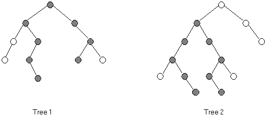

Background:

The height of a binary tree is defined as the number of nodes in the longest path from the root to a leaf of the tree. The heights of the trees above are 5 and 6 for Tree 1 and Tree 2, respectively.
The width of a binary tree is the number of nodes in the longest path in the tree. The width of an empty tree is 0; the width of a single-node tree is 1; and the width of Tree 1 is 8 (darkened nodes) and the width of Tree 2 is 9. The longest path may or may not include the root node. In general, the width of an empty tree is 0 and the width of a nonempty tree is the maximum of the following three quantities:
The width of the left subtree
The width of the right subtree
The length of the longest path that includes the root (which can be calculated from the heights of the left and right subtrees).
When writing these two methods (height and width), you may find it useful to use the max method from the java.lang.Math.
Math.max(int a, int b)
Assignment:
Write a main menu module with the following menu choices:
(1) Fill the tree from a file
(2) Preorder output
(3) Inorder output
(4) Postorder output
(5) Count the nodes in the tree
(6) Count the leaves in the tree
(7) Find the height of the tree
(8) Find the width of the tree
(9) Clear the tree
(q) Quit
Your task is to systematically code and test each of these methods. The data stored in this tree will be a single letter (stored as a String). The source of the letters will be two different files, each consisting of one line of capital letters: (fileA.txt) and (fileB.txt).
Clearing the tree must also dispose of the nodes as the tree is cleared.
You should also print appropriate messages, labeling each output.
Instructions:
Either you or your instructor should prepare these two text files:
(fileA.txt) = KECAJGHOSRV
(fileB.txt) = QJHBADFKNLMPTW
The two files above will generate binary trees having the distinctive shape of the front side of this lab. This will allow you to test your program and verify the correctness of your answers.
For each file, turn in your source code and answers for menu choices 2-8, appropriately labeled.